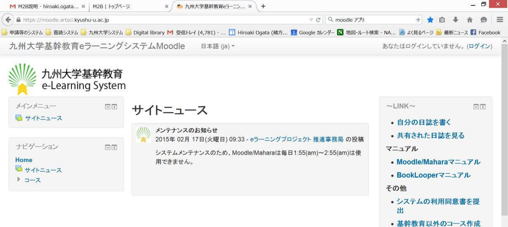
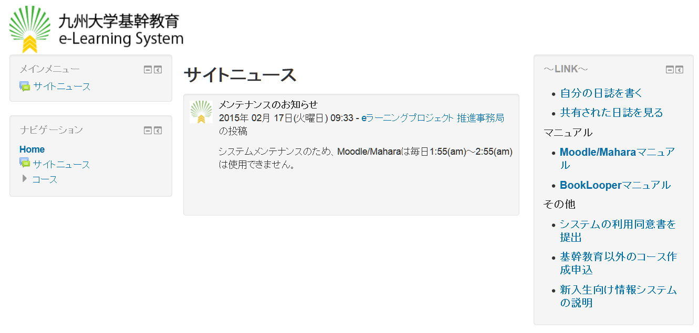
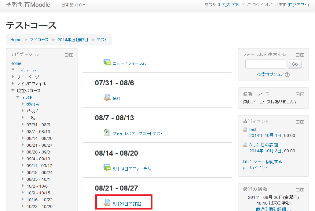
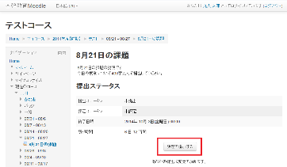
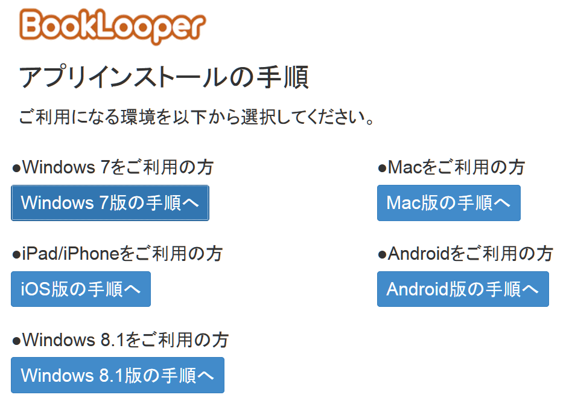
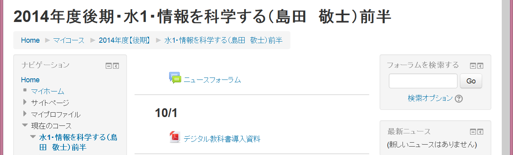
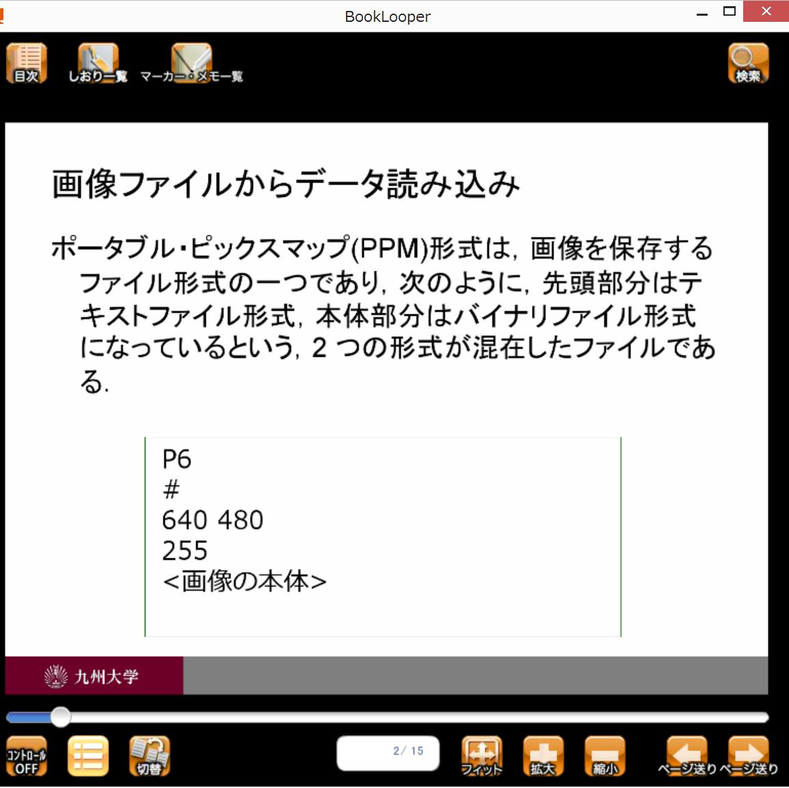

e-Learningシステム（Moodle）
電子教科書システム（BookLooper）
の使い方



Moodleへのログイン
http://moodle.artsci.kyushu-u.ac.jp にアクセスしてSSO-KIDでログイン
※2013年度以前の入学生は学生番号



同意書の提出
Moodleトップページのリンクから「システム利用の同
意書」を提出する
3


Moodle授業コース登録方法
～ 自己登録方法 ～
コース名で検索
プログラム設計論特論
曜日・時限・教員名等を確認してコース名をクリック
「私を受講登録する」ボタンをクリック
4



課題を提出する
コースを選択して、対象の授業回の課題提出を選択
課題提出のアイコンを選択
「課題を追加する」ボタンを選択


受講生への連絡
Moodleのフォーラムから連絡事項を発信
大学のSSO-KIDに紐づけられたメールアドレスに連絡が届く
普段使っているメールアドレスと異なる場合は、転送設定などをしておくこと


BookLooperのインストール
http://booklooper.jp/start/
自分のPCやタブレットの環境に合わせてインストール作業を進める
OSの言語が日本語以外だとインス
トールがうまくいかないので、使用言
語を日本語に設定しておく
OSによっては以下の情報の入力を
求められる
サーバ：https://auth.booklooper.jp 機関コード：K22

授業資料の閲覧方法
各回の授業で使う資料へのリンクをクリックすると，
BookLooperが自動的に起動
BookLoopserへのログインIDとパスワード
2014年度以降の入学生：SSO-KID
2013年度以前の入学生：学生番号
各回の授業で使うリ
ンクをクリックする


BookLooperの使い方
「ストア」から、対象の教材を選択して「本棚に登録」
「本棚」から、対象の教材を選択して「読む」
ページの表示はスライド
が1枚ずつ表示されるよう
に変更する
よく使う機能
メモを書く
マーカーを引く
ページの表示 ページ間の移動